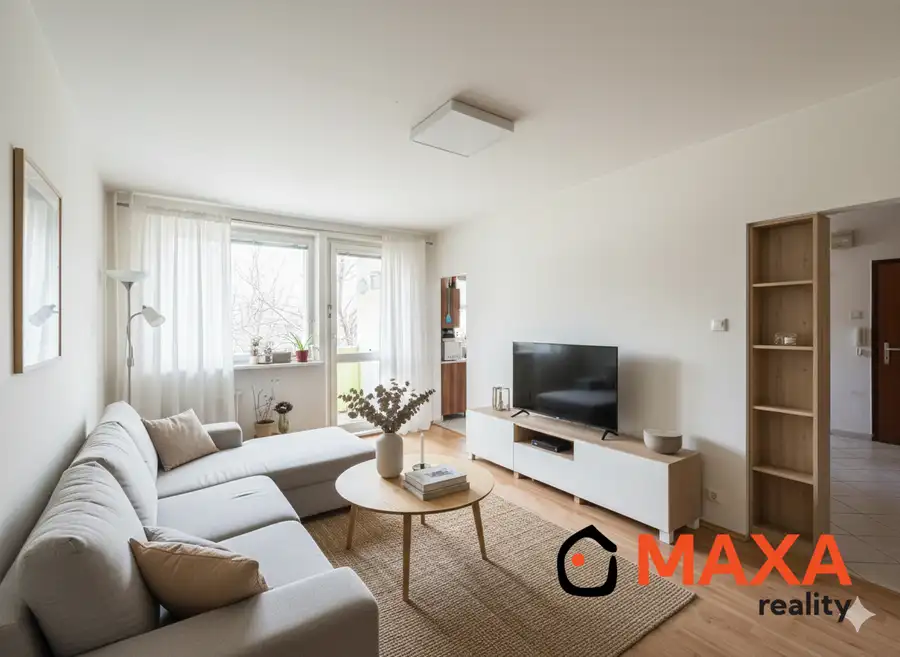
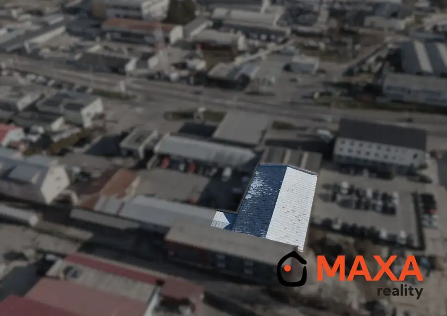
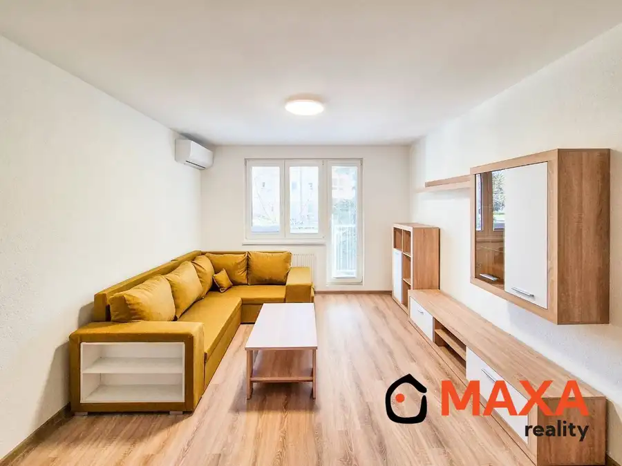

Rodinný dom, neďaleko centra mesta, Prievidza
Prievidza
- Plocha150 m²
- StavČiastočná rekonštrukcia
- VlastníctvoOsobné
O nehnuteľnosti
Ponúkame na predaj rodinný dom v obľúbenej a vyhľadávanej časti Čierne mesto v Prievidzi. Táto lokalita patrí medzi najžiadanejšie práve vďaka svojej výbornej polohe a občianskej vybavenosti, pričom domy sa tu objavujú na predaj len zriedkavo. Dom sa nachádza v tichej a príjemnej ulici s výbornou dostupnosťou do centra mesta. Veľkou výhodou je pešia dostupnosť všetkého potrebného – základná škola je vzdialená približne 1 minútu chôdze a námestie len asi 3 minúty chôdze.Nehnuteľnosť je ideálna pre rodinu, ktorá hľadá bývanie v pokojnom prostredí s mestským komfortom na dosah. Kombinácia lokality, dostupnosti a výnimočnej ponuky robí z tejto nehnuteľnosti jedinečnú príležitosť.Stavba:Rodinný dom je samostatne stojaca, sčasti podpivničená murovaná stavba pozostávajúca z podzemného podlažia, 1. nadzemného podlažia a podkrovia so sedlovou strechou. Rodinný dom bol daný do užívania v roku 1978. Na dome boli realizované rekonštrukcie: zateplenie fasády polystyrénom hr. 100mm, nová fasádna omietka, nová strešná krytina, výmena plastových okien a vstupných dverí, výmena rozvodov elektric. energie na 1 .nadzemom podlaží, výmena kuchynskej linky a rekonštrukcia kúpeľne. Vykurovanie je ústredné pomocou plynového kotla. Dom je napojený na všetky IS. Zastavaná plocha domu je cca 116m2, celková výmera pozemku je 619m2. Na pozemku sa nachádza aj garáž s príslušenstvom a skladom postavená v roku 1982, steny sú murované z pórobetónu so zastavanou plochou 26,7m2.Dom je k dispozícii podľa dohody. Odkaz na 3D prehliadku. Cena 249 000 Eur.Bližšie informácie Vám radi poskytneme na telefónnom čísle 0918 905 715 alebo na e-maile: peterdarmo@maxareality.sk. ID ponuky: 25362
Parametre
| Druh | Rodinný dom |
|---|---|
| Dátum zverejnenia | 20. 4. 2026 |
| Plocha pozemku | 619 m² |
| Stav nehnuteľnosti | Čiastočná rekonštrukcia |
| Typ | Predaj |
| Vlastníctvo | Osobné |
| Zastavaná plocha | 116 m² |
| Úžitková plocha | 150 m² |
Kde to je


Mohlo by Vás zaujímať

BytNové 95 000 €Hľadáme dvojizbový byt v Prievidzi Prievidza 2-izbový60 m²1. podlažie Kúpa 2 izbový byt Prievidza. Plocha: úžitková 60m2. Na podlaží nezáleží v prípade výťahu. Cena 80 000 - 95 000 € Bližšie informácie Vám radi…
Komerčné priestoryNové8 Cena dohodouHala a prevádzková budova na predaj, Prievidza Prievidza 594 m² Ponúkame Vám na predaj halu na ulici Nadjazdová, hneď pri priamom vjazde do okresného mesta Prievidza. Areál sa skladá z dvoch objektov ,ktoré majú…
BytRezervované10 Cena dohodouDvojizbový klimatizovaný byt, sídl. Mládeže, Prievidza Prievidza 2-izbový58 m²1. podlažie Ponúkame na predaj atraktívny 2-izbový byt vo vyhľadávanej lokalite sídliska Mládež v centre mesta Prievidza. Byt s výmerou 58 m² sa nachádza na 1.…